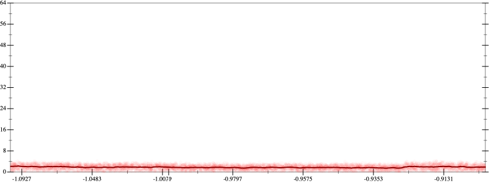
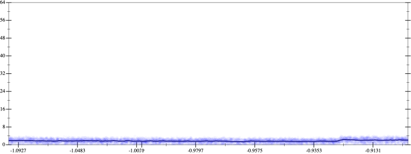
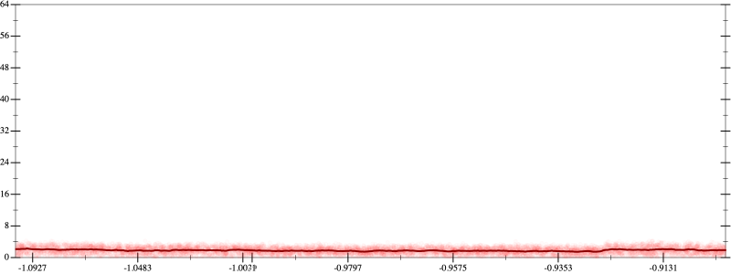
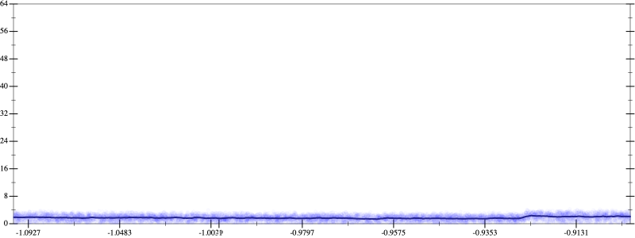

Initial program 1.8
\[\left(\left(\left(30240.0 \cdot x + -80640.0 \cdot \left(\left(x \cdot x\right) \cdot x\right)\right) + 48384.0 \cdot \left(\left(\left(\left(x \cdot x\right) \cdot x\right) \cdot x\right) \cdot x\right)\right) + -9216.0 \cdot \left(\left(\left(\left(\left(\left(x \cdot x\right) \cdot x\right) \cdot x\right) \cdot x\right) \cdot x\right) \cdot x\right)\right) + 512.0 \cdot \left(\left(\left(\left(\left(\left(\left(\left(x \cdot x\right) \cdot x\right) \cdot x\right) \cdot x\right) \cdot x\right) \cdot x\right) \cdot x\right) \cdot x\right)\]
- Using strategy
rm Applied flip3-+1.8
\[\leadsto \color{blue}{\frac{{\left(\left(\left(30240.0 \cdot x + -80640.0 \cdot \left(\left(x \cdot x\right) \cdot x\right)\right) + 48384.0 \cdot \left(\left(\left(\left(x \cdot x\right) \cdot x\right) \cdot x\right) \cdot x\right)\right) + -9216.0 \cdot \left(\left(\left(\left(\left(\left(x \cdot x\right) \cdot x\right) \cdot x\right) \cdot x\right) \cdot x\right) \cdot x\right)\right)}^{3} + {\left(512.0 \cdot \left(\left(\left(\left(\left(\left(\left(\left(x \cdot x\right) \cdot x\right) \cdot x\right) \cdot x\right) \cdot x\right) \cdot x\right) \cdot x\right) \cdot x\right)\right)}^{3}}{\left(\left(\left(30240.0 \cdot x + -80640.0 \cdot \left(\left(x \cdot x\right) \cdot x\right)\right) + 48384.0 \cdot \left(\left(\left(\left(x \cdot x\right) \cdot x\right) \cdot x\right) \cdot x\right)\right) + -9216.0 \cdot \left(\left(\left(\left(\left(\left(x \cdot x\right) \cdot x\right) \cdot x\right) \cdot x\right) \cdot x\right) \cdot x\right)\right) \cdot \left(\left(\left(30240.0 \cdot x + -80640.0 \cdot \left(\left(x \cdot x\right) \cdot x\right)\right) + 48384.0 \cdot \left(\left(\left(\left(x \cdot x\right) \cdot x\right) \cdot x\right) \cdot x\right)\right) + -9216.0 \cdot \left(\left(\left(\left(\left(\left(x \cdot x\right) \cdot x\right) \cdot x\right) \cdot x\right) \cdot x\right) \cdot x\right)\right) + \left(\left(512.0 \cdot \left(\left(\left(\left(\left(\left(\left(\left(x \cdot x\right) \cdot x\right) \cdot x\right) \cdot x\right) \cdot x\right) \cdot x\right) \cdot x\right) \cdot x\right)\right) \cdot \left(512.0 \cdot \left(\left(\left(\left(\left(\left(\left(\left(x \cdot x\right) \cdot x\right) \cdot x\right) \cdot x\right) \cdot x\right) \cdot x\right) \cdot x\right) \cdot x\right)\right) - \left(\left(\left(30240.0 \cdot x + -80640.0 \cdot \left(\left(x \cdot x\right) \cdot x\right)\right) + 48384.0 \cdot \left(\left(\left(\left(x \cdot x\right) \cdot x\right) \cdot x\right) \cdot x\right)\right) + -9216.0 \cdot \left(\left(\left(\left(\left(\left(x \cdot x\right) \cdot x\right) \cdot x\right) \cdot x\right) \cdot x\right) \cdot x\right)\right) \cdot \left(512.0 \cdot \left(\left(\left(\left(\left(\left(\left(\left(x \cdot x\right) \cdot x\right) \cdot x\right) \cdot x\right) \cdot x\right) \cdot x\right) \cdot x\right) \cdot x\right)\right)\right)}}\]
Applied simplify3.0
\[\leadsto \frac{\color{blue}{{\left(\left(\left(\left(-9216.0 \cdot x\right) \cdot \left(x \cdot x\right)\right) \cdot \left(\left(x \cdot x\right) \cdot \left(x \cdot x\right)\right) + 30240.0 \cdot x\right) + \left(x \cdot x\right) \cdot \left(-80640.0 \cdot x + \left(x \cdot 48384.0\right) \cdot \left(x \cdot x\right)\right)\right)}^{3} + {\left(\left(\left(x \cdot 512.0\right) \cdot \left(x \cdot x\right)\right) \cdot {\left(x \cdot x\right)}^{3}\right)}^{3}}}{\left(\left(\left(30240.0 \cdot x + -80640.0 \cdot \left(\left(x \cdot x\right) \cdot x\right)\right) + 48384.0 \cdot \left(\left(\left(\left(x \cdot x\right) \cdot x\right) \cdot x\right) \cdot x\right)\right) + -9216.0 \cdot \left(\left(\left(\left(\left(\left(x \cdot x\right) \cdot x\right) \cdot x\right) \cdot x\right) \cdot x\right) \cdot x\right)\right) \cdot \left(\left(\left(30240.0 \cdot x + -80640.0 \cdot \left(\left(x \cdot x\right) \cdot x\right)\right) + 48384.0 \cdot \left(\left(\left(\left(x \cdot x\right) \cdot x\right) \cdot x\right) \cdot x\right)\right) + -9216.0 \cdot \left(\left(\left(\left(\left(\left(x \cdot x\right) \cdot x\right) \cdot x\right) \cdot x\right) \cdot x\right) \cdot x\right)\right) + \left(\left(512.0 \cdot \left(\left(\left(\left(\left(\left(\left(\left(x \cdot x\right) \cdot x\right) \cdot x\right) \cdot x\right) \cdot x\right) \cdot x\right) \cdot x\right) \cdot x\right)\right) \cdot \left(512.0 \cdot \left(\left(\left(\left(\left(\left(\left(\left(x \cdot x\right) \cdot x\right) \cdot x\right) \cdot x\right) \cdot x\right) \cdot x\right) \cdot x\right) \cdot x\right)\right) - \left(\left(\left(30240.0 \cdot x + -80640.0 \cdot \left(\left(x \cdot x\right) \cdot x\right)\right) + 48384.0 \cdot \left(\left(\left(\left(x \cdot x\right) \cdot x\right) \cdot x\right) \cdot x\right)\right) + -9216.0 \cdot \left(\left(\left(\left(\left(\left(x \cdot x\right) \cdot x\right) \cdot x\right) \cdot x\right) \cdot x\right) \cdot x\right)\right) \cdot \left(512.0 \cdot \left(\left(\left(\left(\left(\left(\left(\left(x \cdot x\right) \cdot x\right) \cdot x\right) \cdot x\right) \cdot x\right) \cdot x\right) \cdot x\right) \cdot x\right)\right)\right)}\]
Applied simplify1.7
\[\leadsto \frac{{\left(\left(\left(\left(-9216.0 \cdot x\right) \cdot \left(x \cdot x\right)\right) \cdot \left(\left(x \cdot x\right) \cdot \left(x \cdot x\right)\right) + 30240.0 \cdot x\right) + \left(x \cdot x\right) \cdot \left(-80640.0 \cdot x + \left(x \cdot 48384.0\right) \cdot \left(x \cdot x\right)\right)\right)}^{3} + {\left(\left(\left(x \cdot 512.0\right) \cdot \left(x \cdot x\right)\right) \cdot {\left(x \cdot x\right)}^{3}\right)}^{3}}{\color{blue}{\left(\left(\left(\left(-9216.0 \cdot x\right) \cdot \left(x \cdot x\right)\right) \cdot \left(\left(x \cdot x\right) \cdot \left(x \cdot x\right)\right) + 30240.0 \cdot x\right) + \left(x \cdot x\right) \cdot \left(-80640.0 \cdot x + \left(x \cdot 48384.0\right) \cdot \left(x \cdot x\right)\right)\right) \cdot \left(\left(\left(\left(-9216.0 \cdot x\right) \cdot \left(x \cdot x\right)\right) \cdot \left(\left(x \cdot x\right) \cdot \left(x \cdot x\right)\right) + 30240.0 \cdot x\right) + \left(x \cdot x\right) \cdot \left(-80640.0 \cdot x + \left(x \cdot 48384.0\right) \cdot \left(x \cdot x\right)\right)\right) + \left(\left(\left({x}^{3} \cdot {x}^{3}\right) \cdot x\right) \cdot \left(x \cdot \left(x \cdot 512.0\right) - -9216.0\right) - \left(\left(x \cdot x\right) \cdot \left(\left(x \cdot 48384.0\right) \cdot \left(x \cdot x\right)\right) + \left(30240.0 \cdot x + \left(x \cdot x\right) \cdot \left(-80640.0 \cdot x\right)\right)\right)\right) \cdot \left(\left(\left(x \cdot 512.0\right) \cdot \left(x \cdot x\right)\right) \cdot \left({x}^{3} \cdot {x}^{3}\right)\right)}}\]
- Using strategy
rm Applied flip3-+1.7
\[\leadsto \frac{{\left(\left(\left(\left(-9216.0 \cdot x\right) \cdot \left(x \cdot x\right)\right) \cdot \left(\left(x \cdot x\right) \cdot \left(x \cdot x\right)\right) + 30240.0 \cdot x\right) + \left(x \cdot x\right) \cdot \left(-80640.0 \cdot x + \left(x \cdot 48384.0\right) \cdot \left(x \cdot x\right)\right)\right)}^{3} + {\left(\left(\left(x \cdot 512.0\right) \cdot \left(x \cdot x\right)\right) \cdot {\left(x \cdot x\right)}^{3}\right)}^{3}}{\left(\left(\left(\left(-9216.0 \cdot x\right) \cdot \left(x \cdot x\right)\right) \cdot \left(\left(x \cdot x\right) \cdot \left(x \cdot x\right)\right) + 30240.0 \cdot x\right) + \left(x \cdot x\right) \cdot \left(-80640.0 \cdot x + \left(x \cdot 48384.0\right) \cdot \left(x \cdot x\right)\right)\right) \cdot \color{blue}{\frac{{\left(\left(\left(-9216.0 \cdot x\right) \cdot \left(x \cdot x\right)\right) \cdot \left(\left(x \cdot x\right) \cdot \left(x \cdot x\right)\right) + 30240.0 \cdot x\right)}^{3} + {\left(\left(x \cdot x\right) \cdot \left(-80640.0 \cdot x + \left(x \cdot 48384.0\right) \cdot \left(x \cdot x\right)\right)\right)}^{3}}{\left(\left(\left(-9216.0 \cdot x\right) \cdot \left(x \cdot x\right)\right) \cdot \left(\left(x \cdot x\right) \cdot \left(x \cdot x\right)\right) + 30240.0 \cdot x\right) \cdot \left(\left(\left(-9216.0 \cdot x\right) \cdot \left(x \cdot x\right)\right) \cdot \left(\left(x \cdot x\right) \cdot \left(x \cdot x\right)\right) + 30240.0 \cdot x\right) + \left(\left(\left(x \cdot x\right) \cdot \left(-80640.0 \cdot x + \left(x \cdot 48384.0\right) \cdot \left(x \cdot x\right)\right)\right) \cdot \left(\left(x \cdot x\right) \cdot \left(-80640.0 \cdot x + \left(x \cdot 48384.0\right) \cdot \left(x \cdot x\right)\right)\right) - \left(\left(\left(-9216.0 \cdot x\right) \cdot \left(x \cdot x\right)\right) \cdot \left(\left(x \cdot x\right) \cdot \left(x \cdot x\right)\right) + 30240.0 \cdot x\right) \cdot \left(\left(x \cdot x\right) \cdot \left(-80640.0 \cdot x + \left(x \cdot 48384.0\right) \cdot \left(x \cdot x\right)\right)\right)\right)}} + \left(\left(\left({x}^{3} \cdot {x}^{3}\right) \cdot x\right) \cdot \left(x \cdot \left(x \cdot 512.0\right) - -9216.0\right) - \left(\left(x \cdot x\right) \cdot \left(\left(x \cdot 48384.0\right) \cdot \left(x \cdot x\right)\right) + \left(30240.0 \cdot x + \left(x \cdot x\right) \cdot \left(-80640.0 \cdot x\right)\right)\right)\right) \cdot \left(\left(\left(x \cdot 512.0\right) \cdot \left(x \cdot x\right)\right) \cdot \left({x}^{3} \cdot {x}^{3}\right)\right)}\]
Applied simplify1.7
\[\leadsto \frac{{\left(\left(\left(\left(-9216.0 \cdot x\right) \cdot \left(x \cdot x\right)\right) \cdot \left(\left(x \cdot x\right) \cdot \left(x \cdot x\right)\right) + 30240.0 \cdot x\right) + \left(x \cdot x\right) \cdot \left(-80640.0 \cdot x + \left(x \cdot 48384.0\right) \cdot \left(x \cdot x\right)\right)\right)}^{3} + {\left(\left(\left(x \cdot 512.0\right) \cdot \left(x \cdot x\right)\right) \cdot {\left(x \cdot x\right)}^{3}\right)}^{3}}{\left(\left(\left(\left(-9216.0 \cdot x\right) \cdot \left(x \cdot x\right)\right) \cdot \left(\left(x \cdot x\right) \cdot \left(x \cdot x\right)\right) + 30240.0 \cdot x\right) + \left(x \cdot x\right) \cdot \left(-80640.0 \cdot x + \left(x \cdot 48384.0\right) \cdot \left(x \cdot x\right)\right)\right) \cdot \frac{{\left(\left(\left(-9216.0 \cdot x\right) \cdot \left(x \cdot x\right)\right) \cdot \left(\left(x \cdot x\right) \cdot \left(x \cdot x\right)\right) + 30240.0 \cdot x\right)}^{3} + {\left(\left(x \cdot x\right) \cdot \left(-80640.0 \cdot x + \left(x \cdot 48384.0\right) \cdot \left(x \cdot x\right)\right)\right)}^{3}}{\color{blue}{\left(\left(x \cdot x\right) \cdot \left(x \cdot -80640.0 + \left(x \cdot x\right) \cdot \left(48384.0 \cdot x\right)\right)\right) \cdot \left(\left(x \cdot x\right) \cdot \left(x \cdot -80640.0 + \left(x \cdot x\right) \cdot \left(48384.0 \cdot x\right)\right) - \left(30240.0 \cdot x + \left(\left(x \cdot x\right) \cdot \left(x \cdot x\right)\right) \cdot \left(\left(-9216.0 \cdot x\right) \cdot \left(x \cdot x\right)\right)\right)\right) + \left(30240.0 \cdot x + \left(\left(x \cdot x\right) \cdot \left(x \cdot x\right)\right) \cdot \left(\left(-9216.0 \cdot x\right) \cdot \left(x \cdot x\right)\right)\right) \cdot \left(30240.0 \cdot x + \left(\left(x \cdot x\right) \cdot \left(x \cdot x\right)\right) \cdot \left(\left(-9216.0 \cdot x\right) \cdot \left(x \cdot x\right)\right)\right)}} + \left(\left(\left({x}^{3} \cdot {x}^{3}\right) \cdot x\right) \cdot \left(x \cdot \left(x \cdot 512.0\right) - -9216.0\right) - \left(\left(x \cdot x\right) \cdot \left(\left(x \cdot 48384.0\right) \cdot \left(x \cdot x\right)\right) + \left(30240.0 \cdot x + \left(x \cdot x\right) \cdot \left(-80640.0 \cdot x\right)\right)\right)\right) \cdot \left(\left(\left(x \cdot 512.0\right) \cdot \left(x \cdot x\right)\right) \cdot \left({x}^{3} \cdot {x}^{3}\right)\right)}\]
 
